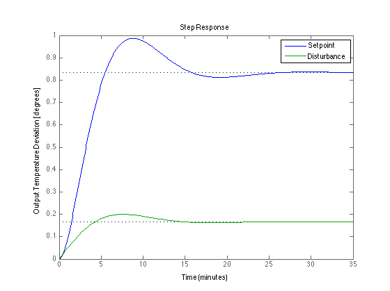
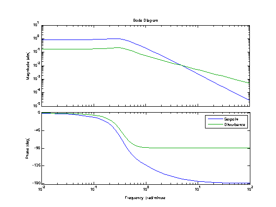
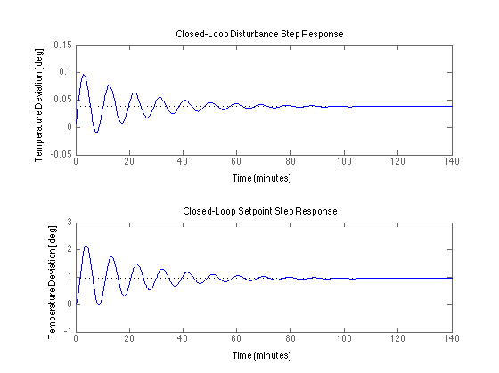
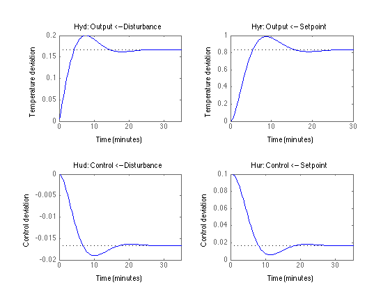

Closed-Loop Transfer Functions
File: Ch11_ClosedLoopDemo_Full.m
The following script illustrates and demonstrates key control concepts discussed in class on Feb 21 and Feb 23rd. Use these notes to understand how to specify transfer functions in Matlab, construct closed-loop transfer functions, and to analyze closed-loop behavior.
Contents
Feedback Control
_______
Disturbance | |
d(s) --->| Gd(s) |-----
|_______| |
|
______ _______ _______ v
Setpoint + _ | | | | | | _ + Output
r(s) --->|_|--->| K(s) |--->| Ga(s) |--->| Gp(s) |--->|_|------> y(s)
^ - |______| |_______| |_______| + |
| Controller Actuator Process |
| _______ |
| | | |
-----------------| Gs(s) |-----------------------
|_______|
SensorProcess Transfer Functions
Each transfer function describes how an outputs depend on an input. Putting these together and analyzing the resulting closed-loop transfer function allows us to design and analyze feedback control systems.
For the above model, the process transfer functions are:
Gp(s): Process transfer function. This generally comes from a process
model the process describing how process variable to be
controlled depends on the value of a manipulated process
variable.Gd(s): Disturbance transfer function. Describes how the process
variable to be controlled depends on disturbances.Gs(s): Sensor transfer function. Describes how the measured variable
depends on the actual value.Ga(s): Actuator transfer function. Describes how the manipulated process
variable responds to control commands.The control transfer function
K(s): Shows how control actions are computed based on the error signal (which is the difference between a setpoint/reference signal and the measured process variable to be controlled.
Process Model
Process Time Constants
tp = 20; ts = 2; ta = 1;
Process Transfer Function
Gp = tf([50],[tp 1],'TimeUnit','minutes')
Gp =
50
--------
20 s + 1
Continuous-time transfer function.
Disturbance Transfer Function
Gd = tf([ 1],[tp 1],'TimeUnit','minutes')
Gd =
1
--------
20 s + 1
Continuous-time transfer function.
Sensor Transfer Function
Gs = tf([ 1],[ts 1],'TimeUnit','minutes')
Gs =
1
-------
2 s + 1
Continuous-time transfer function.
Actuator Transfer Function
Ga = tf([ 1],[ta 1],'TimeUnit','minutes')
Ga =
1
-----
s + 1
Continuous-time transfer function.
Proportional Control
At this point we don't have a good idea of what controller should be. We'll start by examining the performance of proportional control.
Kp = 0.1; K = tf([Kp],[1],'TimeUnit','minutes')
K = 0.1 Static gain.
Closed-Loop Transfer Functions
Matlab allows you to manipulate transfer functions as if they were mathematical objects like numbers or matrices. The code below shows how to compute closed-loop transfer functions for controlled output.
________
Disturbance | |
d(s) ---->| Hyd(s) |-----
|________| |
|
________ v
Setpoint | | _ +
r(s) ---->| Hyr(s) |--->|_|----> y(s)
|________| +Hyd(s): Disturbance to Output
Hyd = Gd/(1 + Gp*Ga*K*Gs)
Hyd =
40 s^3 + 62 s^2 + 23 s + 1
----------------------------------------
800 s^4 + 1280 s^3 + 522 s^2 + 143 s + 6
Continuous-time transfer function.
Hyr(s): Setpoint/Reference to Output
Hyr = Gp*Ga*K/(1+Gp*Ga*K*Gs)
Hyr =
200 s^3 + 310 s^2 + 115 s + 5
---------------------------------------------------
800 s^5 + 2080 s^4 + 1802 s^3 + 665 s^2 + 149 s + 6
Continuous-time transfer function.
Closed-Loop Step Responses
Examine the following step responses to disturbance and setpoint changes. Remember that these are responses to a unit change in inputs. For temperature control that would be a one degree change in the temperature of the surroundings, or a one degree change in setpoint. These are small changes.
Do these step responses seem reasonable to you?
clf; hold on; step(Hyr); step(Hyd); hold off; legend('Setpoint','Disturbance'); ylabel('Output Temperature Deviation [degrees]');
Closed-Loop Bode Plots
The Bode plot summarizes the system response to sinusoidal inputs over a range of frequencies. Here we show how to create Bode plots for closed-loop response with appropriately labeled axes.
- Do these look reasonable to you?
- Confirm that the steady response shown in these Bode plots are consistent with the step responses plotted above.
- See the little hump in the mid-frequency range? What's going on with that?
p = bodeoptions; p.MagUnits = 'abs'; p.MagScale = 'log'; p.FreqUnits = 'rad/minute'; clf; hold on bodeplot(Hyr,p); bodeplot(Hyd,p); hold off; legend('Setpoint','Disturbance');
Effects of Changing Proportional Control Gain
- Does increasing Kp improve the control?
- How large can you make Kp before the system becomes unstable?
- Construct Bode plots for Hyd(s) and Hyr(s).
Kp = 0.5; K = tf([Kp],[1],'TimeUnit','minutes'); Hyd = Gd/(1 + Gp*Ga*K*Gs); Hyr = Gp*Ga*K/(1+Gp*Ga*K*Gs); subplot(2,1,1) step(Hyd); title('Closed-Loop Disturbance Step Response'); ylabel('Temperature Deviation [deg]'); subplot(2,1,2) step(Hyr); title('Closed-Loop Setpoint Step Response'); ylabel('Temperature Deviation [deg]');
Additional Closed-Loop Transfer Functions
Generally its not enough to examine only the output response. It's important to consider what control action is required to achieve output response. For this we need some additional closed-loop transfer functions.
Kp = 0.1; K = tf([Kp],[1],'TimeUnit','minutes'); Hyd = Gd/(1 + Gp*Ga*K*Gs); Hyr = Gp*Ga*K/(1+Gp*Ga*K*Gs);
Hud(s): From disturbance to control action
Hud = -K*Gs*Gd/(1 + K*Gs*Gp*Ga)
Hud =
-4 s^3 - 6.2 s^2 - 2.3 s - 0.1
----------------------------------------------------
1600 s^5 + 3360 s^4 + 2324 s^3 + 808 s^2 + 155 s + 6
Continuous-time transfer function.
Hur(s): From setpoint/reference to control action
Hur = K/(1 + K*Gs*Gp*Ga)
Hur = 4 s^3 + 6.2 s^2 + 2.3 s + 0.1 ----------------------------- 40 s^3 + 62 s^2 + 23 s + 6 Continuous-time transfer function.
Assessing Control System Performance
We have a set of four transfer functions that we'll organize as follows
Hyd Hyr
Hud Hur- Examine these responses. Do you see the difference between Hyd and Hyr?
- Why is Hur different from all the rest?
- The control signal is restricted to the range 0 to 1. (i.e., from 0 to 100%). What is the maximum step disturbance than can be suppressed by this control system? How does your answer change if Kp is increased by a factor of 2?
clf; subplot(2,2,1); step(Hyd); title('Hyd: Output <-- Disturbance'); ylabel('Temperature deviation'); subplot(2,2,2); step(Hyr); title('Hyr: Output <-- Setpoint'); ylabel('Temperature deviation'); subplot(2,2,3); step(Hud) title('Hud: Control <-- Disturbance'); ylabel('Control deviation'); subplot(2,2,4); step(Hur) title('Hur: Control <-- Setpoint'); ylabel('Control deviation');